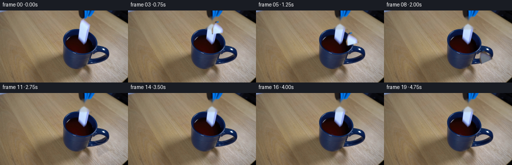
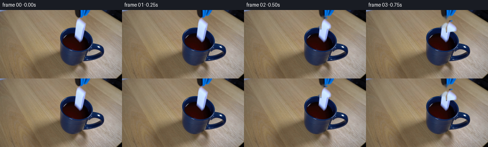
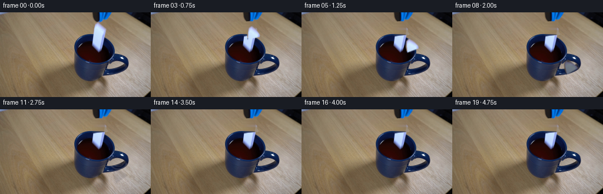
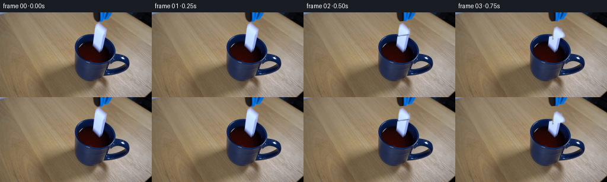

CODING AGENTS AS PIXEL WORLD MODELS
traex/DeepSeek-V4.1-Flash · 0046
点击播放 · 原生 RGB 像素
逐轮保存的候选
回放视频、检查图与代码变化。
每份候选均可单独播放。实际图片检查记录在下方工具轨迹中。
候选 01播放与检查图
点击播放 · 原生 RGB 像素


展开代码变化
--- 上一保存版本
+++ 本次保存版本
@@ -0,0 +1,218 @@
+from pathlib import Path
+
+import cv2
+import numpy as np
+from PIL import Image
+
+import artifact_io
+
+
+ROOT = Path(__file__).resolve().parent
+WIDTH, HEIGHT, FRAME_COUNT = 256, 144, 20
+
+
+def polygon_mask(points, width=WIDTH, height=HEIGHT, scale=4):
+ mask = np.zeros((height * scale, width * scale), dtype=np.uint8)
+ pts = np.rint(np.asarray(points) * scale).astype(np.int32)
+ cv2.fillPoly(mask, [pts], 255, cv2.LINE_AA)
+ return cv2.resize(mask, (width, height), interpolation=cv2.INTER_AREA)
+
+
+def extract_domino(frame):
+ """Extract the small white ceramic domino while retaining its original shading."""
+ polygon = [(166, 14), (172, 14), (182, 37), (157, 38), (157, 29)]
+ alpha = polygon_mask(polygon)
+ x0, y0, x1, y1 = 154, 12, 184, 40
+ rgba = np.dstack((frame[y0:y1, x0:x1], alpha[y0:y1, x0:x1]))
+
+ # Keep a thin, soft edge around the original ceramic shape.
+ alpha_blur = cv2.GaussianBlur(rgba[:, :, 3], (3, 3), 0.55)
+ rgba[:, :, 3] = alpha_blur
+ return rgba, (169.0, 26.0)
+
+
+def make_clean_plate(frame):
+ """Remove the held domino from the wood, leaving the grabber and mug untouched."""
+ plate = frame.copy()
+ polygon = [(165, 13), (173, 13), (183, 38), (156, 39), (156, 28)]
+ mask = polygon_mask(polygon)
+ mask = cv2.dilate(mask, np.ones((3, 3), np.uint8), iterations=1)
+
+ # Restrict the repair to the wood above the grabber's front edge.
+ mask[38:] = 0
+ plate = cv2.inpaint(plate, mask, 3.0, cv2.INPAINT_TELEA)
+
+ # Restore fine wood grain with a lightly feathered nearby texture patch.
+ patch = frame[10:42, 119:151].copy()
+ patch = cv2.resize(patch, (30, 32), interpolation=cv2.INTER_CUBIC)
+ blend = mask[10:42, 154:184].astype(np.float32) / 255.0
+ blend = cv2.GaussianBlur(blend, (5, 5), 1.2)[..., None]
+ target = plate[10:42, 154:184].astype(np.float32)
+ textured = patch.astype(np.float32)
+ plate[10:42, 154:184] = np.clip(
+ target * (1.0 - 0.28 * blend) + textured * (0.28 * blend), 0, 255
+ ).astype(np.uint8)
+ return plate
+
+
+def transform_sprite(sprite, center, angle, scale=1.0, opacity=1.0):
+ h, w = sprite.shape[:2]
+ matrix = cv2.getRotationMatrix2D((w / 2.0, h / 2.0), angle, scale)
+ matrix[0, 2] += center[0] - w / 2.0
+ matrix[1, 2] += center[1] - h / 2.0
+ warped = cv2.warpAffine(
+ sprite,
+ matrix,
+ (WIDTH, HEIGHT),
+ flags=cv2.INTER_LINEAR,
+ borderMode=cv2.BORDER_CONSTANT,
+ borderValue=(0, 0, 0, 0),
+ )
+ if opacity != 1.0:
+ warped[:, :, 3] = (warped[:, :, 3].astype(np.float32) * opacity).astype(np.uint8)
+ return warped
+
+
+def composite_rgba(base, rgba):
+ out = base.astype(np.float32)
+ rgb = rgba[:, :, :3].astype(np.float32)
+ alpha = rgba[:, :, 3:4].astype(np.float32) / 255.0
+ out = out * (1.0 - alpha) + rgb * alpha
+ return np.clip(out, 0, 255).astype(np.uint8)
+
+
+def liquid_mask(frame_shape):
+ yy, xx = np.mgrid[0:HEIGHT, 0:WIDTH]
+ ellipse = ((xx - 201.0) / 25.0) ** 2 + ((yy - 91.0) / 10.5) ** 2 <= 1.0
+ return ellipse & (xx > 181) & (yy > 79) & (yy < 105)
+
+
+def add_liquid_effects(frame, frame_index):
+ """Add a small impact crown, bubbles, and elliptical ripples to the dark drink."""
+ if frame_index < 7:
+ return frame
+
+ out = frame.astype(np.float32)
+ yy, xx = np.mgrid[0:HEIGHT, 0:WIDTH]
+ region = liquid_mask(frame.shape)
+ dark = frame.sum(axis=2) < 300
+ wet_region = region & dark
+
+ # The ceramic first breaks the surface at frame 7. The rings spread and fade.
+ since_impact = frame_index - 7
+ ring_phase = min(since_impact, 10)
+ for ring_index, delay in enumerate((0.0, 2.2, 4.6)):
+ radius = 2.0 + 2.05 * max(0.0, ring_phase - delay)
+ if radius > 23.0:
+ continue
+ ex = (xx - 201.0) / 1.35
+ ey = (yy - 91.0)
+ radial = np.sqrt(ex * ex + ey * ey)
+ width = 0.9 + 0.055 * ring_phase
+ ring = np.exp(-((radial - radius) / width) ** 2)
+ strength = max(0.0, 1.0 - since_impact / 13.0) * (0.30 - ring_index * 0.055)
+ if strength <= 0:
+ continue
+ highlight = np.array([183.0, 171.0, 157.0], dtype=np.float32)
+ shadow = np.array([19.0, 25.0, 40.0], dtype=np.float32)
+ # Alternate a warm reflection on the front of the wave with a cool trough.
+ mix = ring[..., None] * wet_region[..., None] * strength
+ front = ((yy - 91.0) > 0.0)[..., None]
+ color = np.where(front, highlight, shadow)
+ out = out * (1.0 - mix) + color * mix
+
+ # Impact splash: tiny dark droplets and a brief pale crown.
+ if frame_index in (7, 8, 9):
+ droplets = [
+ (196, 83, 1.3, 0.65),
+ (200, 80, 1.1, 0.85),
+ (205, 82, 1.2, 0.60),
+ (209, 86, 0.9, 0.42),
+ ]
+ for cx, cy, radius, strength in droplets:
+ spot = np.exp(-(((xx - cx) ** 2 + (yy - cy) ** 2) / (radius * radius)))
+ spot *= region
+ alpha = spot[..., None] * strength
+ color = np.array([55.0, 43.0, 34.0], dtype=np.float32)
+ out = out * (1.0 - alpha) + color * alpha
+
+ # A restrained bright rim at the exact contact point.
+ if frame_index in (7, 8):
+ glow = np.exp(-(((xx - 201.0) / 4.0) ** 2 + ((yy - 88.0) / 2.2) ** 2))
+ alpha = (glow * region * 0.28)[..., None]
+ color = np.array([148.0, 153.0, 158.0], dtype=np.float32)
+ out = out * (1.0 - alpha) + color * alpha
+
+ return np.clip(out, 0, 255).astype(np.uint8)
+
+
+def add_sinking_shade(rgba, depth):
+ if depth <= 0:
+ return rgba
+ shaded = rgba.copy()
+ amount = min(0.72, 0.14 + depth * 0.055)
+ liquid_color = np.array([22.0, 17.0, 18.0], dtype=np.float32)
+ rgb = shaded[:, :, :3].astype(np.float32)
+ shaded[:, :, :3] = np.clip(
+ rgb * (1.0 - amount) + liquid_color * amount, 0, 255
+ ).astype(np.uint8)
+ return shaded
+
+
+def generate():
+ first = np.asarray(Image.open(ROOT / "first_frame.png").convert("RGB"), dtype=np.uint8)
+ assert first.shape == (HEIGHT, WIDTH, 3)
+
+ clean_plate = make_clean_plate(first)
+ domino, _ = extract_domino(first)
+
+ # Center positions after release. Frames 0-1 remain the untouched first frame.
+ centers = [
+ (169.0, 26.0),
+ (169.0, 26.0),
+ (172.0, 28.0),
+ (179.0, 34.0),
+ (186.0, 44.0),
+ (191.0, 56.0),
+ (195.0, 69.0),
+ (199.0, 81.0),
+ (201.0, 91.0),
+ (202.0, 99.0),
+ (203.0, 105.0),
+ (203.0, 110.0),
+ ]
+ angles = [0.0, 0.0, 2.0, 5.0, 9.0, 13.0, 17.0, 20.0, 22.0, 24.0, 25.0, 26.0]
+
+ frames = np.empty((FRAME_COUNT, HEIGHT, WIDTH, 3), dtype=np.uint8)
+ frames[0] = first
+
+ for index in range(1, FRAME_COUNT):
+ if index <= 1:
+ frame = first.copy()
+ else:
+ frame = clean_plate.copy()
+ if index < len(centers):
+ depth = max(0.0, centers[index][1] - 84.0)
+ opacity = 1.0
+ if index >= 10:
+ opacity = max(0.0, 1.0 - (index - 9) * 0.42)
+ sprite = transform_sprite(
+ domino, centers[index], angles[index], scale=1.0, opacity=opacity
+ )
+ sprite = add_sinking_shade(sprite, depth)
+ frame = composite_rgba(frame, sprite)
+
+ frame = add_liquid_effects(frame, index)
+
+ # Very subtle, low-amplitude sensor variation avoids a dead-looking still.
+ if index > 0:
+ grain = np.random.default_rng(4000 + index).normal(0.0, 0.42, (HEIGHT, WIDTH, 1))
+ frame = np.clip(frame.astype(np.float32) + grain, 0, 255).astype(np.uint8)
+
+ frames[index] = frame
+
+ artifact_io.save(frames, ROOT)
+
+
+if __name__ == "__main__":
+ generate()
候选 02播放与检查图
点击播放 · 原生 RGB 像素


展开代码变化
--- 上一保存版本
+++ 本次保存版本
@@ -20,37 +20,50 @@
def extract_domino(frame):
"""Extract the small white ceramic domino while retaining its original shading."""
- polygon = [(166, 14), (172, 14), (182, 37), (157, 38), (157, 29)]
+ polygon = [(165, 17), (170, 17), (181, 36), (158, 39), (158, 29), (161, 20)]
alpha = polygon_mask(polygon)
- x0, y0, x1, y1 = 154, 12, 184, 40
+ x0, y0, x1, y1 = 155, 15, 184, 41
rgba = np.dstack((frame[y0:y1, x0:x1], alpha[y0:y1, x0:x1]))
# Keep a thin, soft edge around the original ceramic shape.
alpha_blur = cv2.GaussianBlur(rgba[:, :, 3], (3, 3), 0.55)
rgba[:, :, 3] = alpha_blur
- return rgba, (169.0, 26.0)
+ return rgba, (169.0, 27.5)
def make_clean_plate(frame):
"""Remove the held domino from the wood, leaving the grabber and mug untouched."""
plate = frame.copy()
- polygon = [(165, 13), (173, 13), (183, 38), (156, 39), (156, 28)]
+ polygon = [(165, 16), (171, 16), (182, 37), (158, 40), (157, 29), (160, 19)]
mask = polygon_mask(polygon)
mask = cv2.dilate(mask, np.ones((3, 3), np.uint8), iterations=1)
- # Restrict the repair to the wood above the grabber's front edge.
- mask[38:] = 0
- plate = cv2.inpaint(plate, mask, 3.0, cv2.INPAINT_TELEA)
-
- # Restore fine wood grain with a lightly feathered nearby texture patch.
- patch = frame[10:42, 119:151].copy()
- patch = cv2.resize(patch, (30, 32), interpolation=cv2.INTER_CUBIC)
- blend = mask[10:42, 154:184].astype(np.float32) / 255.0
- blend = cv2.GaussianBlur(blend, (5, 5), 1.2)[..., None]
- target = plate[10:42, 154:184].astype(np.float32)
- textured = patch.astype(np.float32)
- plate[10:42, 154:184] = np.clip(
- target * (1.0 - 0.28 * blend) + textured * (0.28 * blend), 0, 255
+ # Reconstruct the narrow wood strip from its left and right boundaries.
+ # A row-wise gradient matches the lighting better than inpainting through
+ # the high-contrast ceramic and grabber edges.
+ hard_mask = mask > 127
+ for y in range(14, 41):
+ xs = np.flatnonzero(hard_mask[y])
+ if not len(xs):
+ continue
+ x0, x1 = int(xs.min()), int(xs.max())
+ left = frame[y, max(0, x0 - 3):x0].mean(axis=0)
+ right = frame[y, x1 + 1:min(WIDTH, x1 + 4)].mean(axis=0)
+ t = np.linspace(0.0, 1.0, x1 - x0 + 1)[:, None]
+ fill = left[None, :] * (1.0 - t) + right[None, :] * t
+
+ # Carry a very light grain cue from the adjacent wood.
+ source = frame[y, max(0, x0 - 18):max(1, x1 - 17)].astype(np.float32)
+ if len(source) >= len(fill):
+ grain = source[:len(fill)] - source[:len(fill)].mean(axis=0, keepdims=True)
+ fill = fill + grain * 0.18
+ plate[y, x0:x1 + 1] = np.clip(fill, 0, 255).astype(np.uint8)
+
+ feather = cv2.GaussianBlur(mask, (3, 3), 0.45).astype(np.float32)[..., None] / 255.0
+ plate = np.clip(
+ plate.astype(np.float32) * feather + frame.astype(np.float32) * (1.0 - feather),
+ 0,
+ 255,
).astype(np.uint8)
return plate
@@ -168,14 +181,14 @@
# Center positions after release. Frames 0-1 remain the untouched first frame.
centers = [
- (169.0, 26.0),
- (169.0, 26.0),
- (172.0, 28.0),
- (179.0, 34.0),
- (186.0, 44.0),
- (191.0, 56.0),
- (195.0, 69.0),
- (199.0, 81.0),
+ (169.0, 27.5),
+ (169.0, 27.5),
+ (170.0, 28.5),
+ (175.0, 34.0),
+ (182.0, 43.0),
+ (188.0, 55.0),
+ (193.0, 68.0),
+ (198.0, 81.0),
(201.0, 91.0),
(202.0, 99.0),
(203.0, 105.0),
@@ -204,11 +217,6 @@
frame = add_liquid_effects(frame, index)
- # Very subtle, low-amplitude sensor variation avoids a dead-looking still.
- if index > 0:
- grain = np.random.default_rng(4000 + index).normal(0.0, 0.42, (HEIGHT, WIDTH, 1))
- frame = np.clip(frame.astype(np.float32) + grain, 0, 255).astype(np.uint8)
-
frames[index] = frame
artifact_io.save(frames, ROOT)
可观测工具轨迹
实际执行的命令与返回图片。
命令 1exit 0
/bin/bash -c "pwd && rg --files -g '"'!*__pycache__*'"' | sed -n '1,200p'"
命令 2exit 0
/bin/bash -c "sed -n '1,240p' GENERATION_RULES.md"
命令 3exit 0
/bin/bash -c 'cat prompt.txt'
命令 4exit 127
/bin/bash -c "file first_frame.png && python - <<'PY'
from PIL import Image
im=Image.open('first_frame.png')
print(im.mode, im.size, im.getextrema())
PY"命令 5exit 0
/bin/bash -c "sed -n '1,260p' artifact_io.py"
命令 6exit 0
/bin/bash -c "sed -n '1,260p' player_template.html"
命令 7exit 1
/bin/bash -c "python - <<'PY'
from PIL import Image
import numpy as np
im=np.asarray(Image.open('first_frame.png').convert('RGB'))
print('shape',im.shape)
# global palette samples quantized
q=(im//16)*16
u,c=np.unique(q.reshape(-1,3),axis=0,return_counts=True)
ix=np.argsort(c)[-30:][::-1]
for a,b in zip(u[ix],c[ix]): print(tuple(a), int(b), round(float(b)/(im.shape[0]*im.shape[1])*100,2))
# grid mean RGB 16x9
h,w=im.shape[:2]
for gy in range(9):
row=[]
for gx in range(16):
a=im[gy*h//9:(gy+1)*h//9,gx*w//16:(gx+1)*w//16]
row.append('%02x%02x%02x'%tuple(a.mean(0).astype(int)))
print(gy, ' '.join(row))
PY"命令 8exit 0
/bin/bash -c "python - <<'PY'
from PIL import Image
import numpy as np
im=np.asarray(Image.open('first_frame.png').convert('RGB')).astype(float)
h,w=im.shape[:2]
# 2x2 downsample? print 128x72 chars based on luminance and dominant hue
chars=' .:-=+*#%@'
# output every 2 px =>128x72 too wide. every 4 px=>64x36
for y in range(0,h,4):
line=''
for x in range(0,w,4):
a=im[y:y+4,x:x+4].mean((0,1))
r,g,b=a
lum=(.299*r+.587*g+.114*b)
# classify hue letter only for saturated/dark
mx=max(r,g,b); mn=min(r,g,b); sat=(mx-mn)/(mx+1e-6)
if lum<35: c='K'
elif sat>.42 and b>r*1.12 and b>g*1.05: c='B'
elif sat>.42 and r>g*1.25 and r>b*1.15: c='R'
elif sat>.35 and g>r*1.15: c='G'
elif sat>.35 and b>r*1.08: c='b'
elif sat>.35 and r>b*1.15: c='r'
else: c=chars[min(9,int(lum/256*10))]
line+=c
print(line)
PY"命令 9exit 0
/bin/bash -c "python - <<'PY'
from PIL import Image
import numpy as np
im=np.asarray(Image.open('first_frame.png').convert('RGB')).astype(int)
r,g,b=im.transpose(2,0,1)
masks={
'blue':(b>r+18)&(b>g+2)&(b>45),
'black':(r+g+b<80),
'bright':(r>170)&(g>165)&(b>160),
'warm':(r>g+10)&(g>b+5)&(r>70),
'darkblue':(b>r+6)&(r<100)&(g<110),
}
for n,m in masks.items():
ys,xs=np.where(m)
print(n, 'n',len(xs),'bbox', (xs.min(),ys.min(),xs.max(),ys.max()) if len(xs) else None)
# per row extents significant
for y in range(0,144,8):
xx=np.where(m[y:y+8].any(0))[0]
if len(xx): print(' ',y, int(xx.min()),int(xx.max()),int(m[y:y+8].sum()))
PY"命令 10exit 0
/bin/bash -c "python - <<'PY'
from PIL import Image
import numpy as np
im=np.asarray(Image.open('first_frame.png').convert('RGB')).astype(int)
# coarsened color clusters from kmeans cv2 if available
try:
import cv2
print('cv2',cv2.__version__)
data=im.reshape(-1,3).astype(np.float32)
crit=(cv2.TERM_CRITERIA_EPS+cv2.TERM_CRITERIA_MAX_ITER,40,0.2)
_,lab,cent=cv2.kmeans(data,12,None,crit,8,cv2.KMEANS_PP_CENTERS)
for i,(c,n) in enumerate(zip(cent,np.bincount(lab.ravel(),minlength=12))):
ys,xs=np.where(lab.reshape(144,256)==i)
print(i, tuple(np.round(c).astype(int)), int(n), (int(xs.min()),int(ys.min()),int(xs.max()),int(ys.max())))
except Exception as e: print(type(e).__name__,e)
PY"命令 11exit 0
/bin/bash -c "python - <<'PY'
from PIL import Image
import numpy as np
im=np.asarray(Image.open('first_frame.png').convert('RGB')).astype(float)
# output detailed map x=72..208, y=0..112, block=2, classify via kmeans-free material labels
chars=' .:-=+*#%@'
for y in range(0,120,2):
line=''
for x in range(64,208,2):
a=im[y:y+2,x:x+2].mean((0,1)); r,g,b=a
mx=max(a); mn=min(a); sat=(mx-mn)/(mx+2)
if mx<30: c='K'
elif b>r+18 and b>g+2 and b>45: c='B'
elif mx>175 and sat<.18: c='W'
elif mx>135 and sat<.20: c='w'
elif r>g+18 and g>b+6: c='r'
elif r>g+8 and g>b+4: c='R'
elif b>r+8: c='b'
else: c=chars[min(9,int((.299*r+.587*g+.114*b)/256*10))]
line+=c
print(f'{y:03d} '+line)
PY"命令 12exit 0
/bin/bash -c "python - <<'PY'
import cv2, numpy as np
from PIL import Image
im=np.asarray(Image.open('first_frame.png').convert('RGB'))
r,g,b=[im[:,:,i].astype(int) for i in range(3)]
tests={
'blue':((b-r>20)&(b-g>2)&(b>50)).astype('uint8'),
'cyanblue':((b-r>25)&(g-r>12)&(b>75)).astype('uint8'),
'white':((r>155)&(g>150)&(b>145)&(abs(r-g)<20)&(abs(g-b)<25)).astype('uint8'),
'dark':((r+g+b<110)).astype('uint8'),
'red':((r-g>30)&(r-b>35)&(r>65)).astype('uint8'),
}
for name,m in tests.items():
n,lab,st,cent=cv2.connectedComponentsWithStats(m,8)
print('\\n',name)
ids=np.argsort(st[1:,cv2.CC_STAT_AREA])[::-1][:15]+1
for i in ids:
x,y,w,h,a=st[i]
print(' area',a,'bbox',x,y,w,h,'cent',np.round(cent[i],1))
PY"命令 13exit 0
/bin/bash -c "python - <<'PY'
from PIL import Image
import numpy as np
im=np.asarray(Image.open('first_frame.png').convert('RGB')).astype(int)
r,g,b=im.transpose(2,0,1)
ms={
'blue':(b-r>20)&(b-g>2)&(b>50),
'bright':(r>155)&(g>150)&(b>145)&(abs(r-g)<20)&(abs(g-b)<25),
'dark':(r+g+b<110),
'cyan':(b-r>25)&(g-r>12)&(b>75),
}
for y in range(0,144,2):
parts=[]
for n,m in ms.items():
xx=np.where(m[y:y+2].any(0))[0]
if len(xx):
# contiguous runs length >=2
runs=[]; st=pr=xx[0]
for v in xx[1:]:
if v>pr+1:
if pr-st>=1:runs.append((st,pr))
st=v
pr=v
if pr-st>=1:runs.append((st,pr))
parts.append(n[0].upper()+':'+','.join(f'{a}-{z}' for a,z in runs))
print(f'{y:03d}', ' '.join(parts))
PY"命令 14exit 0
/bin/bash -c "python - <<'PY'
import cv2,numpy as np
from PIL import Image
im=np.asarray(Image.open('first_frame.png').convert('RGB')).astype(int)
r,g,b=im.transpose(2,0,1)
for name,m in {
'lightblue':(b>140)&(g>120)&(r>100)&(b-r>15),
'white_all':(r+g+b>480)&(abs(r-g)<28)&(abs(g-b)<32),
'nearwhite':(r>135)&(g>130)&(b>125)&((np.maximum.reduce([r,g,b])-np.minimum.reduce([r,g,b]))<35),
'bluecore':(b>70)&(b-r>25)&(b-g>5)&(r<80),
}.items():
n,lab,st,cent=cv2.connectedComponentsWithStats(m.astype('uint8'),8)
print(name)
for i in (np.argsort(st[1:,4])[::-1][:10]+1):
x,y,w,h,a=st[i]
print(a,(x,y,w,h),np.round(cent[i],1))
PY"命令 15exit 0
/bin/bash -c "python - <<'PY'
import cv2, numpy as np
from PIL import Image
im=np.asarray(Image.open('first_frame.png').convert('RGB')).astype(float)
# downsample x8 with pixel size boxes; use cv2 box
for y0 in range(0,144,8):
out=[]
for x0 in range(120,240,8):
a=im[y0:y0+8,x0:x0+8].reshape(-1,3)
# dominant kmeans-esque color nearest to palette
m=np.median(a,0).astype(int)
out.append('%02x%02x%02x'%tuple(m))
print(f'{y0:03d}', ' '.join(out))
PY"命令 16exit 0
/bin/bash -c "python - <<'PY'
from PIL import Image
import numpy as np
im=np.asarray(Image.open('first_frame.png').convert('RGB')).astype(int)
# Sample rows/cols using a compact HTML color grid via ANSI truecolor? print selected pixels every 4
for y in range(16,120,4):
vals=[]
for x in range(120,240,4):
r,g,b=im[y,x]
if b>r+25 and b>g+5 and b>60: c='B'
elif r+g+b<100: c='K'
elif r>150 and g>145 and b>140 and max(r,g,b)-min(r,g,b)<35: c='W'
elif r>g+12 and g>b+5: c='r'
elif max(r,g,b)<130: c='d'
else: c='.'
vals.append(c)
print(f'{y:03d} '+''.join(vals))
PY"命令 17exit 0
/bin/bash -c "python - <<'PY'
from PIL import Image
import numpy as np, cv2
im=np.asarray(Image.open('first_frame.png').convert('RGB'))
data=im.reshape(-1,3).astype(np.float32)
crit=(cv2.TERM_CRITERIA_EPS+cv2.TERM_CRITERIA_MAX_ITER,60,0.1)
_,lab,cent=cv2.kmeans(data,16,None,crit,12,cv2.KMEANS_PP_CENTERS)
lab=lab.reshape(144,256)
# sort by RGB luminance and label
order=np.argsort(cent.mean(1))
chars='0123456789abcdef'
print('clusters')
for j,i in enumerate(order): print(chars[j],tuple(np.round(cent[i]).astype(int)),int((lab==i).sum()))
# map every 2 px around scene
print('map x=112..232 y=0..128')
for y in range(0,128,2):
line=''
for x in range(112,232,2):
# majority cluster in block
vals=lab[y:y+2,x:x+2].ravel(); i=np.bincount(vals).argmax()
line+=chars[np.where(order==i)[0][0]]
print(f'{y:03d} '+line)
PY"命令 18exit 0
/bin/bash -c "python - <<'PY'
from PIL import Image
import numpy as np
im=np.asarray(Image.open('first_frame.png').convert('RGB')).astype(int)
r,g,b=im.transpose(2,0,1)
# class map, high detail around x 110-256, y 0-144; each char 2x2. categories
# B blue, W white, K black/dark, R warm wood, c cool gray, s shadow
for y in range(0,144,2):
line=''
for x in range(104,256,2):
a=im[y:y+2,x:x+2].mean((0,1)); rr,gg,bb=a
mx=a.max(); mn=a.min(); sat=(mx-mn)/(mx+1)
if bb-rr>25 and bb-gg>3 and bb>50: c='B'
elif rr+gg+bb<105: c='K'
elif mx>150 and sat<.22: c='W'
elif bb-rr>10 and bb>80: c='b'
elif rr>gg+15 and gg>bb+4: c='r'
elif rr>gg+8 and gg>bb+2: c='R'
elif mx<130: c='d'
elif bb>rr+5: c='c'
else: c='.'
line+=c
print(f'{y:03d} {line}')
PY"命令 19exit 0
/bin/bash -c "python - <<'PY'
import cv2, numpy as np
from PIL import Image
im=np.asarray(Image.open('first_frame.png').convert('RGB'))
# print edge positions per rows from high-contrast gradient
G=cv2.cvtColor(im,cv2.COLOR_RGB2GRAY).astype(float)
gy,gx=np.gradient(G)
for y in range(16,120,4):
mag=np.hypot(gx[y],gy[y])
peaks=[]
for x in range(100,250):
if mag[x]>35 and mag[x]>=mag[max(0,x-2):min(256,x+3)].max(): peaks.append((x,int(mag[x])))
# nonmax collapse close
out=[]
for x,v in peaks:
if not out or x-out[-1][0]>4:out.append((x,v))
print(y,out[:20])
PY"命令 20exit 0
/bin/bash -c "python - <<'PY'
from PIL import Image
import numpy as np
im=np.asarray(Image.open('first_frame.png').convert('RGB')).astype(int)
# compare adjacent region variation to see what's static/textured
for box in [(0,0,256,144),(0,0,120,144),(0,0,100,80),(120,0,256,144),(160,0,220,80),(170,60,256,144)]:
x0,y0,x1,y1=box;a=im[y0:y1,x0:x1]
print(box,'mean',a.mean((0,1)).round(1),'std',a.std((0,1)).round(1))
# find unique colors frequency exact
u,c=np.unique(im.reshape(-1,3),axis=0,return_counts=True)
print('unique',len(u),'top exact')
for i in np.argsort(c)[-20:][::-1]:print(tuple(u[i]),int(c[i]))
PY"命令 21exit 0
/bin/bash -c "python - <<'PY'
from PIL import Image
import numpy as np
im=np.asarray(Image.open('first_frame.png').convert('RGB')).astype(int)
r,g,b=im.transpose(2,0,1)
m=(r>135)&(g>130)&(b>125)&((np.maximum.reduce([r,g,b])-np.minimum.reduce([r,g,b]))<35)
for y in range(0,144,2):
xx=np.where(m[y:y+2].any(0))[0]
runs=[]
if len(xx):
st=pr=xx[0]
for v in xx[1:]:
if v>pr+1:
if pr-st>=1:runs.append((st,pr))
st=v
pr=v
if pr-st>=1:runs.append((st,pr))
print(f'{y:03d}',runs)
PY"命令 22exit 0
/bin/bash -c "python - <<'PY'
from PIL import Image
import numpy as np
im=np.asarray(Image.open('first_frame.png').convert('RGB')).astype(int)
# detect blue/black object outer edge by comparing to local wood medians
for y in range(0,125,2):
# find blue/dark contiguous large object x 120..225
row=im[y]
r,g,b=row.T
m=((b-r>10)&(b>45)&(r<150))|((r+g+b<150)&(b>r-5))
# print runs >2 in x 115..230
xx=np.where(m[115:230])[0]+115
runs=[]
if len(xx):
st=pr=xx[0]
for v in xx[1:]:
if v>pr+1:
if pr-st>=2:runs.append((st,pr))
st=v
pr=v
if pr-st>=2:runs.append((st,pr))
print(f'{y:03d}',runs)
PY"命令 23exit 0
/bin/bash -c "python - <<'PY'
from PIL import Image
import numpy as np
im=np.asarray(Image.open('first_frame.png').convert('RGB')).astype(int)
# print exact RGB-ish hex in x=154..198 y=10..82 every 2, with symbols categories
# palette symbol mapping via thresholds
for y in range(10,83,2):
line=''
for x in range(150,202,2):
a=im[y:y+2,x:x+2].mean((0,1)); r,g,b=a
if b-r>30 and b-g>5 and b>70: c='B'
elif r+g+b<100: c='K'
elif b-r>15 and b>80: c='b'
elif r>145 and g>140 and b>130 and max(a)-min(a)<35: c='W'
elif max(a)-min(a)<25 and max(a)>120: c='w'
elif r>g+15 and g>b+5: c='r'
elif max(a)<130: c='d'
else: c='.'
line+=c
print(f'{y:03d} {line}')
# rows sample every 4 show hex in range
for y in [12,16,20,24,28,32,36,40,44,48,52,56,60,64,68,72,76,80,84,88,92,96,100,104,108,112]:
print('\\ny',y)
for x in range(150,203,4): print(x,'%02x%02x%02x'%tuple(im[y:y+2,x:x+2].mean((0,1)).astype(int)),end=' ')
print()
PY"命令 24exit 0
/bin/bash -c "python - <<'PY'
from PIL import Image
import numpy as np
im=np.asarray(Image.open('first_frame.png').convert('RGB')).astype(int)
# symbols detailed by exact color neighborhoods, output 1 char per pixel for x170..255, y55..120
for y in range(55,121):
line=''
for x in range(170,256):
r,g,b=im[y,x]
if r>175 and g>165 and b>155 and max(r,g,b)-min(r,g,b)<35: c='W'
elif r>135 and g>130 and b>125 and max(r,g,b)-min(r,g,b)<35: c='w'
elif b-r>22 and b-g>3 and b>60: c='B'
elif b>r+8 and b>g+2 and b>40: c='b'
elif r+g+b<90: c='K'
elif r+g+b<150: c='d'
elif r>g+15 and g>b+5: c='r'
elif r>g+8 and g>b+3: c='R'
elif max(r,g,b)-min(r,g,b)<22: c='.'
else: c='?'
line+=c
print(f'{y:03d} {line}')
PY"命令 25exit 0
/bin/bash -c "ls -la && if [ -f task_spec.json ]; then cat task_spec.json; fi && find .tmp -maxdepth 2 -type f -print 2>/dev/null | sed -n '1,100p'"
命令 26exit 0
/bin/bash -c "python - <<'PY'
from PIL import Image
import numpy as np
im=np.asarray(Image.open('first_frame.png').convert('RGB')).astype(int)
r,g,b=im.transpose(2,0,1)
blue=(b-r>20)&(b-g>2)&(b>50)
dark=(r+g+b<110)
white=(r>135)&(g>130)&(b>125)&((np.maximum.reduce([r,g,b])-np.minimum.reduce([r,g,b]))<35)
# print mask at 2x2; B blue, K dark, W white, combinations
for y in range(0,144,2):
line=''
for x in range(120,240,2):
bl=blue[y:y+2,x:x+2].mean()>.25; dk=dark[y:y+2,x:x+2].mean()>.25; wh=white[y:y+2,x:x+2].mean()>.25
if bl and dk:c='X'
elif bl:c='B'
elif dk:c='K'
elif wh:c='W'
else:c='.'
line+=c
print(f'{y:03d} {line}')
PY"命令 27exit 0
/bin/bash -c "python - <<'PY'
import cv2,numpy as np
from PIL import Image
im=np.asarray(Image.open('first_frame.png').convert('RGB'))
r,g,b=im.transpose(2,0,1).astype(int)
m=((r>150)&(g>145)&(b>140)&(np.maximum.reduce([r,g,b])-np.minimum.reduce([r,g,b])<40)).astype('uint8')
n,lab,st,cent=cv2.connectedComponentsWithStats(m,8)
for i in np.argsort(st[1:,4])[::-1][:10]+1:
x,y,w,h,a=st[i];print(i,a,(x,y,w,h),cent[i])
if a==128:
for yy in range(y-3,y+h+3):
print(f'{yy:03d}', ''.join('#' if lab[yy,xx]==i else '.' for xx in range(x-4,x+w+4)))
print('rgb range',im[lab==i].min(0),im[lab==i].max(0),im[lab==i].mean(0))
PY"命令 28exit 0
/bin/bash -c "python - <<'PY'
from PIL import Image
import numpy as np
im=np.asarray(Image.open('first_frame.png').convert('RGB')).astype(int)
# White object sample around x150..180 y18..36; output 1px map and rgb hex rows
for y in range(16,37):
print(f'{y:03d}', ' '.join('%02x%02x%02x'%tuple(im[y,x]) for x in range(154,181)))
PY"命令 29exit 0
/bin/bash -c "command -v ffmpeg || true; command -v python; python - <<'PY'
import cv2, PIL, numpy
print('cv2',cv2.__version__,'PIL',PIL.__version__,'numpy',numpy.__version__)
PY"命令 30exit 0
/bin/bash -c "python - <<'PY'
from PIL import Image
import numpy as np
im=np.asarray(Image.open('first_frame.png').convert('RGB')).astype(int)
# Print RGB around white domino compactly via ANSI not useful; print row ranges by brightness
# derive bbox of white low-saturation bright in top area
r,g,b=im.transpose(2,0,1)
m=(r>140)&(g>135)&(b>130)&((np.maximum.reduce([r,g,b])-np.minimum.reduce([r,g,b]))<45)&(np.indices(r.shape)[0]<40)&(np.indices(r.shape)[1]>145)&(np.indices(r.shape)[1]<190)
for y in range(15,40):
xx=np.where(m[y])[0]
print(y,(xx.min(),xx.max(),len(xx)) if len(xx) else None)
# local diff blue/white top object
PY"命令 31exit 0
/bin/bash -c "python - <<'PY'
from PIL import Image
import numpy as np
im=np.asarray(Image.open('first_frame.png').convert('RGB')).astype(int)
for y in range(8,45):
line=''
for x in range(148,192):
r,g,b=im[y,x]; mx=max(r,g,b); mn=min(r,g,b)
if b-r>20 and b>50: c='B'
elif mx>130 and mx-mn<55: c='W'
elif mx>115 and mx-mn<50: c='w'
elif mx<70: c='K'
elif r>g+15 and g>b+5: c='r'
elif mx<120: c='d'
else:c='.'
line+=c
print(f'{y:02d} {line}')
print(' '+''.join(str(x//10%10) for x in range(148,192)))
print(' '+''.join(str(x%10) for x in range(148,192)))
PY"命令 32exit 0
/bin/bash -c "python - <<'PY'
from PIL import Image
import numpy as np
im=np.asarray(Image.open('first_frame.png').convert('RGB')).astype(int)
for box in [(158,16,182,38),(177,62,256,144),(126,37,218,116),(140,40,180,100),(180,80,218,110)]:
x0,y0,x1,y1=box;a=im[y0:y1,x0:x1]
print(box,'mean',a.mean((0,1)).round(1),'median',np.median(a.reshape(-1,3),0).round(1),'std',a.std((0,1)).round(1))
# average RGB for top object pixels vs wood around
for y in range(17,37):
print(y, im[y,158:181].mean(0).round(1))
PY"命令 33exit 0
/bin/bash -c "python - <<'PY'
from PIL import Image
import numpy as np
im=np.asarray(Image.open('first_frame.png').convert('RGB')).astype(int)
# texture stats wood by areas
for box in [(0,0,120,144),(120,0,156,40),(182,0,256,30),(0,100,120,144),(220,20,256,60)]:
x0,y0,x1,y1=box;a=im[y0:y1,x0:x1]
print(box, 'mean',a.mean((0,1)).round(1),'std',a.std((0,1)).round(1))
# calculate horizontal/vertical color gradients overall left region
PY"命令 34exit 1
/bin/bash -c 'python generate.py'
命令 35exit 0
/bin/bash -c "python generate.py && python - <<'PY'
from PIL import Image
import numpy as np
im=np.asarray(Image.open('first_frame.png').convert('RGB'))
out=np.asarray(Image.open('frames/00.png').convert('RGB'))
print('frame0 identical:',np.array_equal(im,out))
print('shape:',np.asarray(Image.open('frames/00.png')).shape)
PY"命令 36exit 0
/bin/bash -c "python - <<'PY'
import cv2, numpy as np
from PIL import Image
im=np.asarray(Image.open('first_frame.png').convert('RGB')).astype(int)
r,g,b=im.transpose(2,0,1)
# candidate top ceramic masks, print component stats
for name,m in {
'bluewhite':(b>r+6)&(b>g+3)&(b>120)&(np.indices(r.shape)[0]<42)&(np.indices(r.shape)[1]>145)&(np.indices(r.shape)[1]<190),
'brightblue':(b>r+10)&(b>140)&(np.indices(r.shape)[0]<42)&(np.indices(r.shape)[1]>145)&(np.indices(r.shape)[1]<190),
'brightneutral':(r>145)&(g>150)&(b>150)&(b>r)&(np.indices(r.shape)[0]<42)&(np.indices(r.shape)[1]>145)&(np.indices(r.shape)[1]<190),
}.items():
n,lab,st,cent=cv2.connectedComponentsWithStats(m.astype('uint8'),8)
print(name)
for i in np.argsort(st[1:,4])[::-1][:5]+1:
x,y,w,h,a=st[i];print(a,(x,y,w,h),cent[i])
# Print mask B for bluewhite at 1 px
m=(b>r+6)&(b>g+3)&(b>120)
print('map')
for y in range(12,41):
print(f'{y:02d}', ''.join('#' if m[y,x] else '.' for x in range(150,190)))
PY"命令 37exit 0
/bin/bash -c "python - <<'PY'
from PIL import Image
import numpy as np
im=np.asarray(Image.open('first_frame.png').convert('RGB')).astype(int)
# exact top object's per-row x range using brightblue mask
r,g,b=im.transpose(2,0,1)
m=(b>r+10)&(b>140)
for y in range(14,42):
xs=np.where(m[y,145:190])[0]+145
if len(xs):print(y,xs.min(),xs.max(),len(xs))
PY"命令 38exit 0
/bin/bash -c "python - <<'PY'
from PIL import Image
import numpy as np
im=np.asarray(Image.open('first_frame.png').convert('RGB')).astype(int)
# Save crop enlarged for numeric analysis
Image.open('first_frame.png').crop((120,0,256,144)).resize((544,576)).save('.tmp/right_crop.png')
# inspect frames background changes and mask
import cv2
fr=np.asarray(Image.open('frames/03.png').convert('RGB'))
a=np.asarray(Image.open('first_frame.png').convert('RGB'))
d=np.abs(fr.astype(int)-a.astype(int)).max(2)
print('diff frame3 bbox',np.where(d>15)[1].min(),np.where(d>15)[0].min(),np.where(d>15)[1].max(),np.where(d>15)[0].max(), 'count', (d>15).sum())
# top object pixel diff count
print('top region changed', (d[:42,145:190]>15).sum())
PY"命令 39exit 0
/bin/bash -c "python - <<'PY'
from PIL import Image
import numpy as np
for f in [0,1,2,3,5,7,9,11,15,19]:
a=np.asarray(Image.open(f'frames/{f:02d}.png').convert('RGB')).astype(int)
# print bbox for bright blue/white sprite-like pixels, excluding mug >40
m=(a[:,:,2]-a[:,:,0]>10)&(a[:,:,2]>130)
ys,xs=np.where(m)
print(f, (xs.min(),ys.min(),xs.max(),ys.max(),len(xs)) if len(xs) else None)
PY"命令 40exit 0
/bin/bash -c "python - <<'PY'
from PIL import Image,ImageDraw
import numpy as np
# make contact sheets enlarged with labels and crop of scene
frames=[Image.open(f'frames/{i:02d}.png').convert('RGB') for i in range(20)]
for group,inds in [('a',[0,1,2,3,4,5,6,7]),('b',[8,9,10,11,12,13,14,15]),('c',[16,17,18,19])]:
sheet=Image.new('RGB',(512*2,(288+20)*4),(25,28,35));d=ImageDraw.Draw(sheet)
for j,i in enumerate(inds):
x=(j%2)*512;y=(j//2)*308
d.text((x+6,y+4),f'{i:02d}',fill='white')
sheet.paste(frames[i].crop((110,0,238,144)).resize((512,288),Image.Resampling.NEAREST),(x,y+20))
sheet.save(f'.tmp/sheet_{group}.png')
PY"命令 41exit 0
/bin/bash -c "python - <<'PY'
from PIL import Image
import numpy as np
im=np.asarray(Image.open('first_frame.png').convert('RGB')).astype(float)
# calculate best local texture patch source and seam stats. show inpaint vs original in compact differences
# print columns around object top at rows 15,20,25,30,35,40
for y in [14,16,18,20,22,24,26,28,30,32,34,36,38,40]:
print('y',y)
for x in range(150,187,2): print(f'{x}:{tuple(im[y,x].astype(int))}',end=' ')
print()
PY"命令 42exit 0
/bin/bash -c "python - <<'PY'
from PIL import Image
import numpy as np
for f in [0,2,3,5,7,9,11,15,19]:
im=np.asarray(Image.open(f'frames/{f:02d}.png').convert('RGB')).astype(int)
# map x 120..240, y 0..130, block 2; category based on object colors
print('\\nFRAME',f)
for y in range(0,130,2):
line=''
for x in range(120,240,2):
a=im[y:y+2,x:x+2].mean((0,1)); r,g,b=a
if b-r>25 and b-g>4 and b>70:c='B'
elif r>150 and g>150 and b>150 and max(a)-min(a)<40:c='W'
elif r+g+b<105:c='K'
elif r>g+12 and g>b+4:c='r'
elif max(a)-min(a)<22:c='.'
else:c='d'
line+=c
print(line)
PY"命令 43exit 0
/bin/bash -c "python - <<'PY'
from PIL import Image
import numpy as np
im=np.asarray(Image.open('first_frame.png').convert('RGB')).astype(float)
# mean wood color left/right per row
for y in range(12,40,2):
l=im[y,145:156].mean(0); r=im[y,184:193].mean(0)
print(y,'L',l.round(1),'R',r.round(1))
# save clean plate and analyze rows 12-40 x150..190
import generate
f=np.asarray(Image.open('first_frame.png').convert('RGB'))
cp=generate.make_clean_plate(f)
Image.fromarray(cp).save('.tmp/clean_plate.png')
print('clean means')
for y in range(12,40,2): print(y, cp[y,150:190].mean(0).round(1), 'minmax', cp[y,150:190].min(), cp[y,150:190].max())
PY"命令 44exit 0
/bin/bash -c "python - <<'PY'
from PIL import Image
import numpy as np
im=np.asarray(Image.open('first_frame.png').convert('RGB')).astype(int)
for y in range(30,46):
print(f'{y:02d}', ' '.join('%02x%02x%02x'%tuple(im[y,x]) for x in range(152,184)))
PY"命令 45exit 0
/bin/bash -c "python - <<'PY'
import cv2,numpy as np
from PIL import Image
im=np.asarray(Image.open('first_frame.png').convert('RGB'))
r,g,b=im.transpose(2,0,1).astype(int)
for name,m in {
'darkliquid':((r+g+b<300)&(np.indices(r.shape)[0]>=85)&(np.indices(r.shape)[0]<=115)&(np.indices(r.shape)[1]>=175)&(np.indices(r.shape)[1]<=225)).astype('uint8'),
'dark':((r+g+b<180)&(np.indices(r.shape)[0]>=80)&(np.indices(r.shape)[0]<=115)&(np.indices(r.shape)[1]>=175)&(np.indices(r.shape)[1]<=225)).astype('uint8'),
}.items():
n,lab,st,cent=cv2.connectedComponentsWithStats(m,8)
print(name)
for i in np.argsort(st[1:,4])[::-1][:8]+1:
x,y,w,h,a=st[i]; print(a,(x,y,w,h),np.round(cent[i],1))
PY"命令 46exit 0
/bin/bash -c "python - <<'PY'
from PIL import Image
import numpy as np
im=np.asarray(Image.open('first_frame.png').convert('RGB')).astype(int)
# print RGB table for region x170..220 y74..112 where liquid is
for y in range(74,113,2):
print(f'y={y:03d}', ' '.join(f'{x}:{im[y,x,0]:02x}{im[y,x,1]:02x}{im[y,x,2]:02x}' for x in range(174,222,6)))
PY"命令 47exit 0
/bin/bash -c "python - <<'PY'
import cv2,numpy as np
from PIL import Image
im=np.asarray(Image.open('first_frame.png').convert('RGB'))
r,g,b=im.transpose(2,0,1).astype(int)
for thr in [8,10,12,15,18,20,25]:
m=((b-r>thr)&(b>120)).astype('uint8')
roi=np.zeros_like(m);roi[16:40,156:183]=1;m*=roi
m=cv2.morphologyEx(m,cv2.MORPH_CLOSE,np.ones((3,3),np.uint8))
n,lab,st,cent=cv2.connectedComponentsWithStats(m,8)
if n>1:
i=np.argmax(st[1:,4])+1;x,y,w,h,a=st[i]
print(thr,a,(x,y,w,h),cent[i])
PY"命令 48exit 0
/bin/bash -c "python - <<'PY'
from PIL import Image
import numpy as np
im=np.asarray(Image.open('first_frame.png').convert('RGB')).astype(int)
r,g,b=im.transpose(2,0,1)
m=(b-r>10)&(b>120)
for y in range(14,42):
xs=np.where(m[y,150:190])[0]+150
if len(xs):
# split runs
runs=[];st=pr=xs[0]
for x in xs[1:]:
if x>pr+1:runs.append((st,pr));st=x
pr=x
runs.append((st,pr))
print(y,runs)
PY"命令 49exit 0
/bin/bash -c "python - <<'PY'
from PIL import Image
import numpy as np
im=np.asarray(Image.open('first_frame.png').convert('RGB')).astype(float)
# compare blue object center brightness against pure blue clusters; print median RGB by y for ceramic area excluding edge
for y in range(20,38):
a=im[y,162:177]
print(y, np.median(a,0).round(1), a.mean(0).round(1))
PY"命令 50exit 0
/bin/bash -c "ls -la && sed -n '1,240p' artifact_io.py && python - <<'PY'
from PIL import Image
import numpy as np
im=Image.open('first_frame.png').convert('RGB')
a=np.asarray(im)
print('size',im.size,'shape',a.shape,'range',a.min(),a.max())
print('mean',a.mean((0,1)))
# dominant quantized colors
q=(a//16)*16
u,c=np.unique(q.reshape(-1,3),axis=0,return_counts=True)
ix=np.argsort(c)[-25:][::-1]
for i in ix:
print(tuple(int(v) for v in u[i]),int(c[i]),round(100*c[i]/(a.shape[0]*a.shape[1]),2))
PY"命令 51exit 0
/bin/bash -c "python - <<'PY'
from PIL import Image
import numpy as np
im=np.asarray(Image.open('first_frame.png').convert('RGB')).astype(int)
for y in range(14,42):
line=''
for x in range(152,186):
r,g,b=im[y,x]
# Ceramic has blue/white brightness; grabber blue is dark; wood warm.
if r+g+b>430 and b>150: c='C'
elif b-r>30 and b>100: c='c'
elif b-r>15 and b>70: c='B'
elif b-r>8 and b>45: c='b'
elif r+g+b<80: c='K'
elif r>g+10 and g>b+4: c='r'
elif r+g+b<170: c='d'
else:c='.'
line+=c
print(f'{y:02d} {line}')
print(' '+''.join(str(x//10%10) for x in range(152,186)))
print(' '+''.join(str(x%10) for x in range(152,186)))
PY"命令 52exit 0
/bin/bash -c "python - <<'PY'
from PIL import Image
import numpy as np
for f in range(20):
a=np.asarray(Image.open(f'frames/{f:02d}.png').convert('RGB')).astype(int)
# check frame shift in static left region from frame0
b=np.asarray(Image.open('frames/00.png').convert('RGB')).astype(int)
d=np.abs(a[:,:120]-b[:,:120]).mean()
print(f,d)
PY"命令 53exit 0
/bin/bash -c "python - <<'PY'
from PIL import Image
import numpy as np
for f in [0,1,2,3,4,5,6,7,8,9,10,11,12,13,14,15,16,17,18,19]:
a=np.asarray(Image.open(f'frames/{f:02d}.png').convert('RGB')).astype(int)
# object mask: bright ceramic pixels blueish near x145..225
r,g,b=a.transpose(2,0,1)
m=(b>150)&(r>120)&(g>120)&(b-r>10)
yy,xx=np.where(m)
if len(xx): print(f,len(xx),(xx.min(),yy.min(),xx.max(),yy.max()))
else:print(f,0)
PY"命令 54exit 0
/bin/bash -c "python generate.py && python - <<'PY'
from PIL import Image
import numpy as np
a=np.asarray(Image.open('first_frame.png').convert('RGB'))
b=np.asarray(Image.open('frames/00.png').convert('RGB'))
print('identical',np.array_equal(a,b))
# static-region checks across output
for f in [1,2,5,10,19]:
c=np.asarray(Image.open(f'frames/{f:02d}.png').convert('RGB')).astype(int)
print(f,'left maxdiff',np.abs(c[:,:120]-a[:,:120].astype(int)).max(),'mean',np.abs(c[:,:120]-a[:,:120].astype(int)).mean())
PY"命令 55exit 0
/bin/bash -c "python - <<'PY'
from PIL import Image,ImageDraw
import numpy as np
frames=[Image.open(f'frames/{i:02d}.png').convert('RGB') for i in range(20)]
sheet=Image.new('RGB',(1024,660),(24,27,33));d=ImageDraw.Draw(sheet)
for j,i in enumerate([0,2,4,6,7,8,9,10,11,13,15,19]):
x=(j%4)*256;y=(j//4)*220
d.text((x+5,y+3),f'{i:02d}',fill='white')
sheet.paste(frames[i],(x,y+20))
sheet.save('.tmp/final_contact.png')
# Numeric diff report and frame dimensions
for i in range(20):
a=np.asarray(frames[i])
assert a.shape==(144,256,3) and a.dtype==np.uint8
print('all frames valid')
# compute motion mask extents
for i in range(20):
a=np.asarray(frames[i]).astype(int);b=np.asarray(frames[0]).astype(int)
diff=np.abs(a-b).max(2)>10
ys,xs=np.where(diff)
print(i, len(xs), (xs.min(),ys.min(),xs.max(),ys.max()) if len(xs) else None)
PY"命令 56exit 0
/bin/bash -c "python - <<'PY'
from PIL import Image
import numpy as np
a=np.asarray(Image.open('first_frame.png').convert('RGB')).astype(int)
b=np.asarray(Image.open('frames/19.png').convert('RGB')).astype(int)
d=np.abs(a-b).max(2)
ys,xs=np.where(d>10)
print('bbox',xs.min(),ys.min(),xs.max(),ys.max())
# row stats of residual top region
for y in range(10,43):
print(y,np.where(d[y]>10)[0].tolist())
PY"保存候选 2 份；完成命令 56 次；可验证图片返回 0 张。原始 API 响应与完整日志保留在本地。